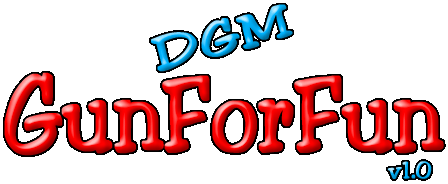

DGM GunForFun é o jogo no qual estou trabalhando atualmente. Pretendo fazê-lo com modos "offline", para
um ou mais jogadores num mesmo computador e/ou contra o computador, como também um modo "online".
Este modo "online" pretendo implementar em cima de servidores Kaillera.
(Desenvolvimento interrompido temporariamente)
O jogo ainda se encontra em seu estágio inicial de desenvolvimento, portanto não é totalmente "jogável".
No entanto, disponibilizo aqui a versão de testes mais atual.
Clique aqui para fazer o download. - O arquivo tem aproximadamente 775KB, e está comprimido no formato ZIP.
Você precisará do DirectX 8.1 ou superior instalado em seu Windows, e uma placa com aceleração 3D compatível com Direct3D.